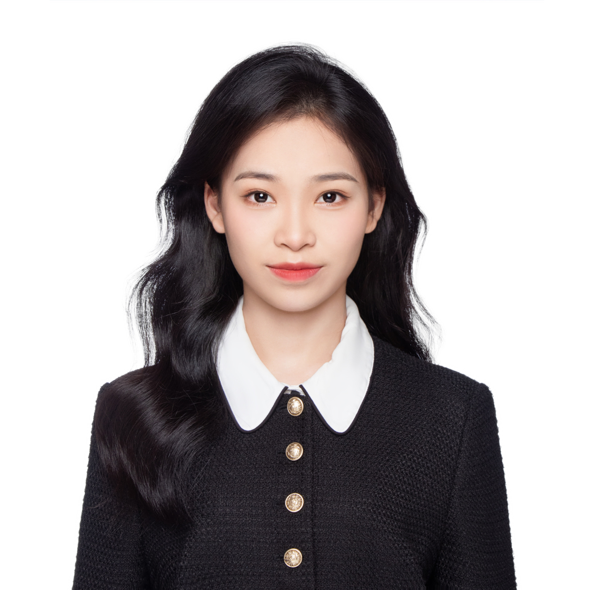

数据驱动的整合营销人，擅长媒介投放策略、竞品分析与全链路效果优化。持有市场分析研究员(MARs)Level1，雅思7分，北师香港浸会大学公共关系与广告学在读。Data-driven integrated marketer specializing in media buying, competitive analysis, and full-funnel optimization. MARs Level 1, IELTS 7.0, PR & Advertising major at BNU-HKBU UIC.

我是王清萌，21岁，北师香港浸会大学公共关系与广告学专业大三学生。我热爱用数据驱动决策，在媒介投放、市场执行和活动策划中寻找创意与效果的平衡点。实习期间，我积累了小红书、抖音双平台达人投放与内容优化的实战经验，擅长通过A/B测试和漏斗分析提升转化率。I am Wang Qingmeng, 21, a junior majoring in PR & Advertising at BNU-HKBU UIC. Passionate about data-driven decision-making, I excel at balancing creativity and performance in media buying, market execution, and event planning. I have hands-on experience in KOL seeding and content optimization on Xiaohongshu and Douyin, skilled in A/B testing and funnel analysis to boost conversion.
在人民日报-证券时报，我深度参与行业研究与竞品分析；在高途和新东方，我独立负责媒介投放全流程——从达人筛选、Brief撰写、内容审核到数据复盘，并配合线下活动进行A/B测试，成功提升转化率15%以上。同时，我运营个人小红书账号，打造过30万+浏览量的爆款内容，验证了从内容策略到执行优化的完整能力。At People's Daily, I conducted competitive analysis and industry research. At Gaotu and New Oriental, I managed the entire media buying process—KOL selection, brief writing, content review, and performance tracking—combined with offline A/B tests, achieving >15% conversion uplift. I also grew my personal Xiaohongshu account to a viral post with 300K+ views.
我熟练掌握Excel、SPSS、Python、SQL，持有市场分析研究员Level1证书，能够独立完成消费者洞察、竞品分析和数据可视化。全英文教学环境（雅思7，口语写作双7）让我能够无缝对接跨国团队，兼具国际视野与本土落地能力。Proficient in Excel, SPSS, Python, SQL, and certified MARs Level 1. Capable of conducting consumer insights, competitive analysis, and data visualization. All-English academic environment (IELTS 7.0) enables me to work seamlessly in cross-cultural teams.
我热衷于媒介投放、数据分析与整合营销，正在寻找市场营销、公共关系、新媒体运营或消费者研究方向的实习/全职机会。欢迎通过电话或邮箱联系我！Passionate about media buying, data analysis, and integrated marketing. Actively seeking internship/full-time roles in marketing, PR, new media, or consumer research. Feel free to reach out!